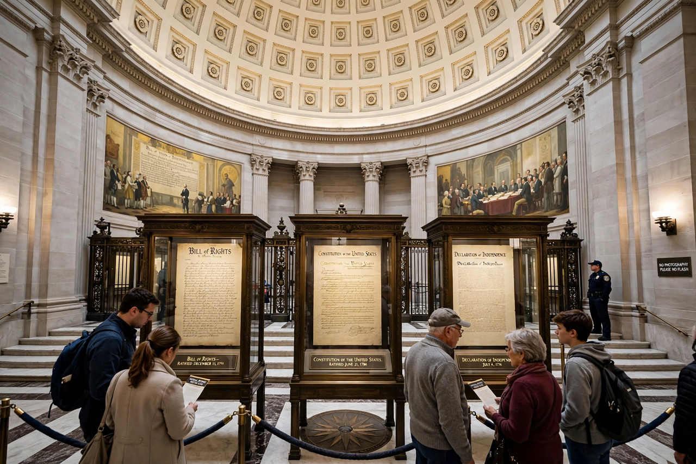

Incorporation of the Bill of Rights
From Wikipedia, the free encyclopedia

Incorporation is the doctrine by which most provisions of the United States Bill of Rights — originally binding only on the federal government — have been applied to state and local governments through the Due Process Clause of the Fourteenth Amendment. Developed by the US Supreme Court mainly in the twentieth century, 'selective incorporation' has nationalised American rights law, from free speech to the right to bear arms.
Background
In Barron v. Baltimore (1833) the Supreme Court held the Bill of Rights restrained only the federal government. After the American Civil War, the Fourteenth Amendment (1868) forbade states to deprive persons of liberty without due process or to abridge the privileges or immunities of citizens — but the Slaughter-House Cases (1873) read the latter clause narrowly, channelling incorporation through due process instead.
Selective incorporation
From Gitlow v. New York (1925, speech) onwards, the Court incorporated rights deemed 'fundamental to the American scheme of justice' one at a time: press, religion, counsel (Gideon v. Wainwright), unreasonable searches, cruel and unusual punishment, and — in the twenty-first century — the Second Amendment (McDonald v. City of Chicago, 2010), the Excessive Fines Clause (Timbs v. Indiana, 2019) and jury unanimity (Ramos v. Louisiana, 2020). Justice Hugo Black argued for 'total incorporation'; the Court never adopted it, but by now nearly all guarantees apply against the states.
Unincorporated remnants
Still not incorporated are the Third Amendment (rarely litigated), the Fifth Amendment's grand-jury indictment right, the Seventh Amendment's civil jury right, and arguably the Eighth Amendment's excessive bail clause. Incorporation doctrine remains contested between originalist and living-constitutionalist readings of the Fourteenth Amendment.